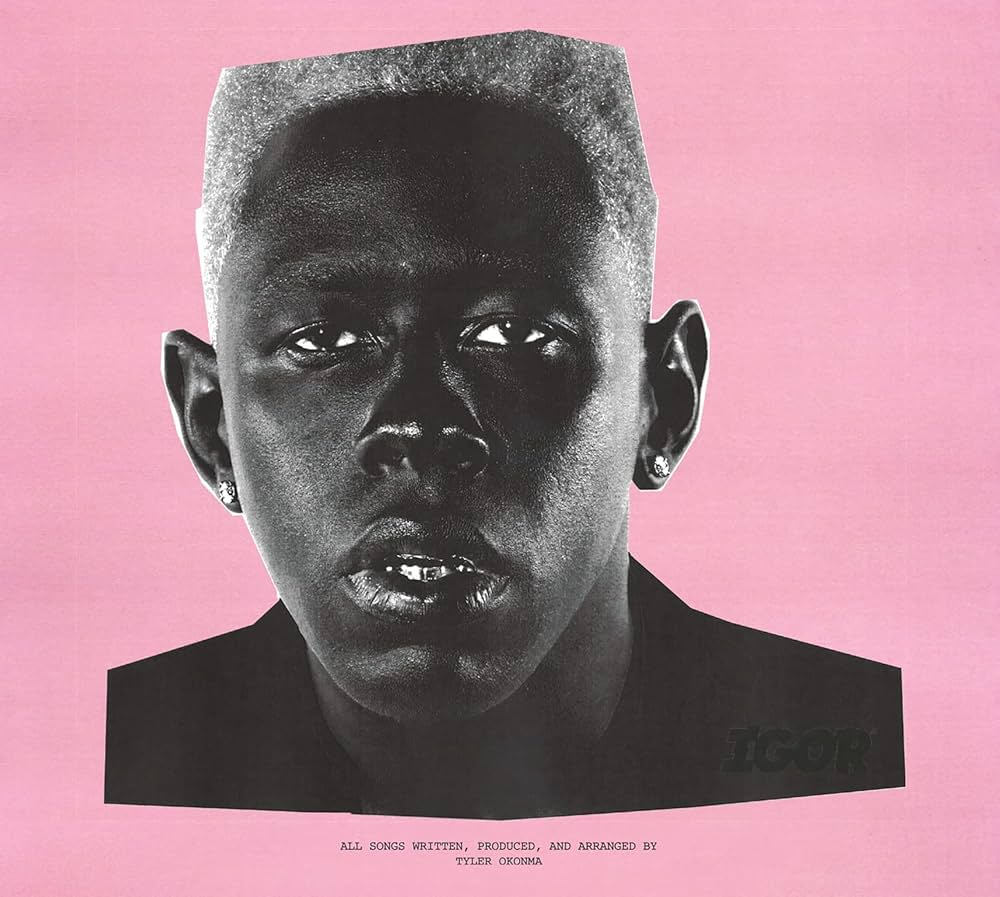

BASTARD:
THE DEBUT MIXTAPE BY TYLER, THE CREATOR, RELEASED IN 2009. THIS PROJECT INTRODUCED TYLER'S RAW AND UNFILTERED STYLE, FEATURING DARK AND CONTROVERSIAL LYRICS. IT SET THE STAGE FOR HIS FUTURE WORK AND ESTABLISHED HIM AS A PROMINENT FIGURE IN THE ALTERNATIVE HIP-HOP SCENE.
GOBLIN:
THE FIRST STUDIO ALBUM BY TYLER, THE CREATOR, RELEASED IN 2011. THIS ALBUM CONTINUED THE DARK AND SHOCKING THEMES OF HIS EARLIER WORK, WHILE ALSO SHOWCASING HIS GROWTH AS AN ARTIST. IT FEATURED HITS LIKE "YONKERS" AND "SHE," AND ESTABLISHED TYLER

WOLF:
THE SECOND STUDIO ALBUM AND THE SECOND OF THE TRILOGY, WOLF WAS THE ALBUM THAT WAS SUPPOSED TO DROP AFTER GOBLIN BUT TYLER HAD OTHER PLANS. THE ALBUM WAS KNOWN TO BE THE MOST MATURE OF THE THREE. MY PERSONAL FAVORITE.

CHERRY BOMB:
THE THIRD STUDIO ALBUM AND THE FOURTH OF THE TRILOGY, CHERRY BOMB IS MY LEAST FAVORITE BUT IT HAD SOME BANGERS. THE ALBUM WAS KNOWN TO BE THE MOST EXPERIMENTAL OF THE THREE.

FLOWER BOY:
THE FOURTH STUDIO ALBUM BY TYLER, THE CREATOR. THIS ALBUM MARKED A SIGNIFICANT SHIFT IN HIS MUSICAL STYLE, SHOWCASING A MORE MELODIC AND INTROSPECTIVE APPROACH. IT RECEIVED CRITICAL ACCLAIM AND WAS NOMINATED FOR A GRAMMY AWARD.IT PUT TYLER ON THE RADAR

IGOR:
THE FIFTH STUDIO ALBUM BY TYLER, THE CREATOR. THIS ALBUM WON A GRAMMY FOR BEST RAP ALBUM AND IS KNOWN FOR ITS UNIQUE BLEND OF GENRES, INCLUDING R&B, FUNK, AND SOUL. IT TELLS A COHESIVE STORY ABOUT LOVE AND HEARTBREAK, SHOWCASING TYLER'S GROWTH AS AN ARTIST.I RELATED TO IT THE MOST.

CALL ME IF YOU GET LOST:
THE SIXTH STUDIO ALBUM BY TYLER, THE CREATOR. THIS ALBUM WAS RELEASED IN 2021 AND IS KNOWN FOR ITS NOSTALGIC AND LUSH PRODUCTION, AS WELL AS TYLER'S LYRICAL SKILLS. IT FEATURES GUEST APPEARANCES FROM ARTISTS LIKE LIL WAYNE, TY DOLLA $IGN, AND PHARRELL WILLIAMS. IT WAS NOMINATED FOR A GRAMMY AWARD FOR BEST RAP ALBUM.
CALL ME IF YOU GET LOST THE ESTATE SALE:
AN EXTENDED VERSION OF TYLER'S SIXTH STUDIO ALBUM, RELEASED IN 2023. THIS EDITION INCLUDES NEW SONGS AND UNRELEASED TRACKS THAT SHOWCASE TYLER'S VERSATILITY AND CREATIVE EVOLUTION. IT FURTHER EXPANDS ON THE THEMES AND SOUNDS OF THE ORIGINAL ALBUM, GIVING FANS A DEEPER INSIGHT INTO HIS ARTISTIC JOURNEY.
CHROMAKOPIA:
THE SEVENTH STUDIO ALBUM BY TYLER, THE CREATOR. THIS ALBUM WAS RELEASED IN 2024 AND IS KNOWN FOR ITS VIBRANT AND ECLECTIC SOUND, DRAWING INSPIRATION FROM A WIDE RANGE OF MUSICAL STYLES AND GENRES. IT FEATURES COLLABORATIONS WITH ARTISTS LIKE DANIEL CAESAR, DOECHI,LOLA YOUNG,WHEEZY,BIG GLO,SEXY REDD ETC... THE ALBUM EXPLORES THEMES OF IDENTITY, CREATIVITY, AND SELF-EXPRESSION, SHOWCASING TYLER'S CONTINUED GROWTH AND ARTISTIC MATURITY.